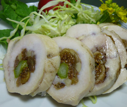

鶏肉の干しいちじく
ローストグリル
ローストグリル
- 調理時間：40 分
- （一人当たり）
- カロリー：366kcal
- たんぱく質：19.0g
- 脂質：24.8g
- 塩分：1.5g

＜２人分＞
- 鶏もも肉
- 1枚
- 塩、コショウ
- 少々
- オリーブ油
- 適量
- ドライいちじく
- 40g
- ナッツ
（アーモンド、くるみ等） - 大さじ2～3
- アスパラ
- 2本

- 鶏肉に厚みがある場合、切り目をいれてひらく。オリーブ油を回しかけ、塩、コショウをしてよくもむ。
- ドライいちじくは２～３等分に切る。ナッツは砕いておく。
- アスパラは、さっとゆがく。
- 鶏肉は皮のない側を上にして、ドライいちじく、ナッツを散らし、アスパラガスを芯にしてまく。
※このとき、タコ糸で結ぶとしっかりと焼きあがる。 - １８０℃のオーブンで２０～２５分焼き、仕上げに温度を上げて皮がパリッとするまで焼き上げる。
切り分けて、器に盛り、野菜を添える。
鶏肉の干しいちじくローストグリル
昔から不老長寿のくだものとされるいちじくは、晩夏から初秋が旬なので、この時期はドライいちじくが常備してあると便利です。
生のいちじくには、糖質、脂質、たんぱく質を分解し、胃腸のはたらきを活発にして、消化を促進する酵素が含まれていて、食後のデザートに適しています。ドライいちじくは、水溶性の食物繊維が多く、腸の蠕動運動を促し、便秘予防、腸内環境を改善するため、花粉症の方にもおすすめです。生のフルーツは、そのまま食べるおいしさがありますが、料理に使うと、いつもと違った食卓を演出できますし、新たなおいしさを発見できるかもしれません。